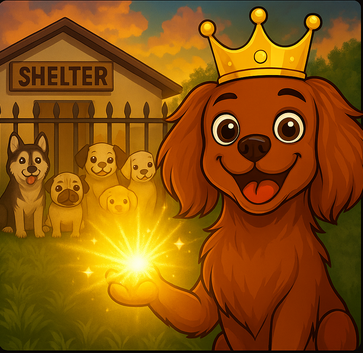
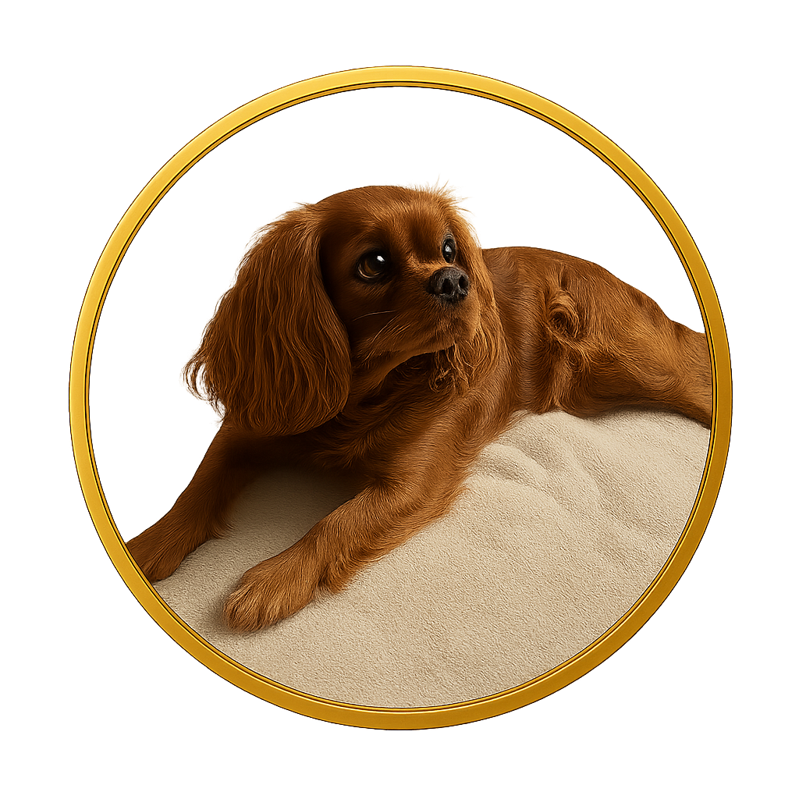

RoyalPAW ($RYPW) is not just another meme token — it’s the crown jewel of Solana, inspired by Bailey, the one true royal Cavalier King — the only dog with “King” in his name. 🐶👑
Forged from loyalty, purpose, and paws, RoyalPAW unites meme culture with real-world kindness — supporting dog shelters, honoring all four-legged royals, and crowning its holders as part of the digital kingdom of paw power.
With NFTs, community strength, and unstoppable royal vibes, Bailey’s dream becomes the blockchain’s legacy. Join the pack.
How to Buy $RYPW
Buying $RYPW on Solana is simple and takes just a few minutes! Follow these steps carefully 👇
🐾 Step 1: Create a Solana Wallet
• Download Phantom Wallet (for Chrome, Firefox, or mobile).
• Click “Create a new wallet” and store your secret phrase safely.
• (Never share your secret phrase with anyone!)
🐾 Step 2: Fund Your Wallet with SOL
• Buy SOL from an exchange (e.g. Binance, Coinbase).
• Withdraw SOL to your Phantom wallet address.
• You’ll need SOL to cover both the purchase and small Solana network fees.
🐾 Step 3: Visit Pump.fun
• Go to Pump.fun — this is where $RYPW was launched.
• Connect your Phantom wallet (top-right corner).
• In the search bar, paste our token address: So11111111111111111111111111111111111111112
🐾 Step 4: Buy $RYPW
• Click “Buy” and choose the amount of SOL you want to trade for $RYPW.
• Confirm the transaction in your wallet.
• Wait a few seconds — you’ll see $RYPW in your Phantom wallet balance!
💎 Step 5: Track & Hold
• You can follow the live chart on DexScreener.
• $RYPW holders get access to NFT perks, airdrops, and exclusive community events.
• Join our Telegram or Twitter to stay updated!
💎 Bailey’s Treasury: 100,000,000 $RYPW for project use and community missions (locked & transparent).
🏰 30,000,000 – Locked for project stability
👑 10,000,000 – Airdrop to NFT holders
📸 5,000,000 – For dog owners posting selfies
📈 5,000,000 – Marketing
❤️ 50,000,000 – Donations to dog shelters
🐾 900,000,000 – Available to the public via Pump.fun liquidity — fair, open launch with no private allocations
RoyalMap
Donating Shelters Mission

Powered by the Royal Community
As a true King, Bailey’s mission goes beyond the blockchain. With the power of $RYPW and our loyal community, we aim to bring real help to dogs in need — food, care and support for struggling shelters.
5% of total supply is dedicated to donations for dog shelters.
Part of the tokens held by Bailey are reserved strictly for this mission.
All donations will be documented and shared with the community.
We can’t save every dog in the world — but together we can help many. 🐾👑
The Story of Bailey

Bailey’s RoyalPaw NFT Collection
Every kingdom needs a legend — and every legend needs its crown.
Bailey’s Royal Collection is more than just NFTs.
It’s a digital legacy, a celebration of loyalty, and a mission to turn memes into meaning.
Each piece carries the spirit of the royal Cavalier King — crafted with purpose, crowned with kindness, and powered by the strength of the RoyalPAW community.
Owning one means more than holding art — you hold a piece of Bailey’s vision: to bring light, love, and hope to dogs in need.


Socials